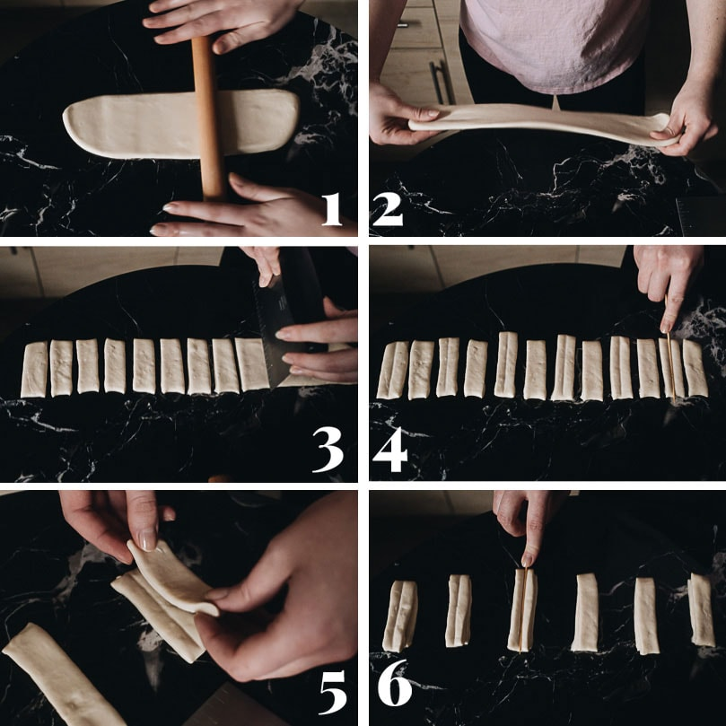
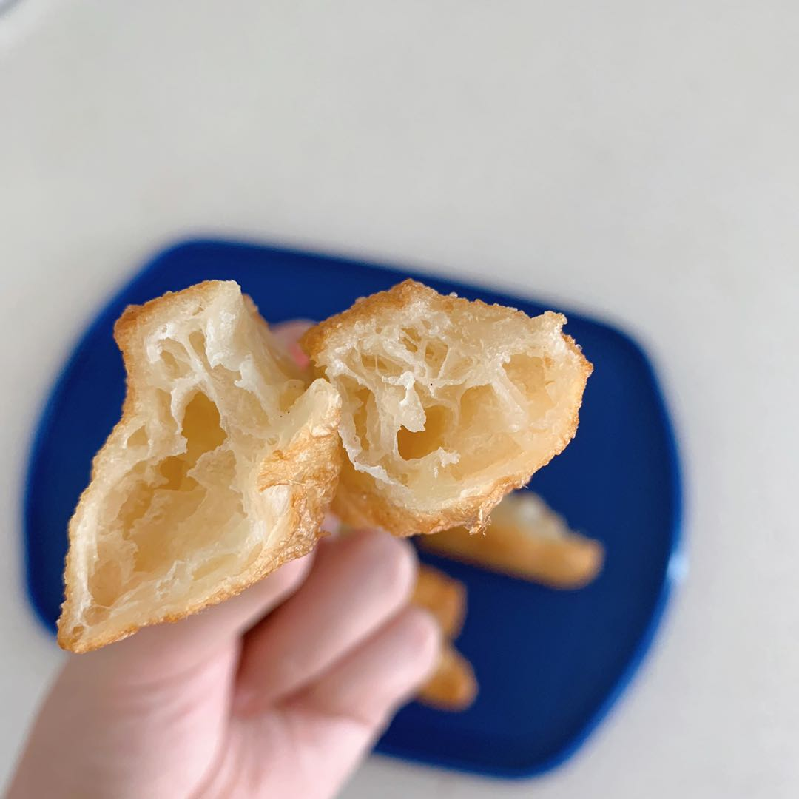

- Flour 350g
- Water 250g
- Baking powder 10g
- Baking soda 3g
- Salt 6g
- Oil 12g
Ingredients
- Mix all the ingredients and form a dough. Knead the dough until smooth and refrigerate overnight.
- Roll the dough out to a rectangle around 7cm wide and 1cm thick.
- Cover and rest the dough for 15 minutes if the dough tightens up when rolling.
- Cut the rectangle to strips that are around 3cm wide. You will have little 3*7cm strips.
- Lay one strip onto another and make an indentation with a chopstick in the center along the long side. The stip will have a mark across its "body".
- Gently pinch down the top and bottom of the strip, making the two strips stick to each other.
- Heat up a pot of oil to around 180 to 200℃ and fry them up.
- People usually eat youtiaos with soy milk.
- I found this image from omnivorescookbook that will help explain the shaping process
- 
Process
Things to read before you start making this recipe
This is a traditional chinese breakfast. I know they are fried and unhealthy and what not, but they taste really amazing.
You can also substitute water with cold milk when mixing the ingredients.
When rolling out the dough, try to make it too thin, the ideal thickness should be around 1cm (the dough will puff up better)
